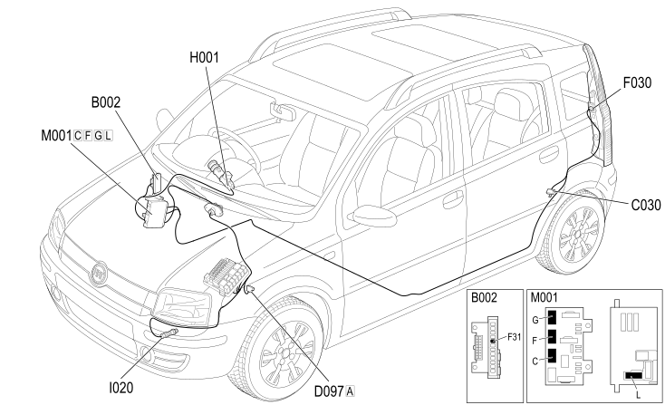

E2022 REVERSING LIGHTS - COMPONENT LOCATION
- Path
- Electrical equipment > 1 ELECTRICAL FUNCTIONS > E20 INTERIOR LIGHTING > E2022 REVERSING LIGHTS > E2022 REVERSING LIGHTS - COMPONENT LOCATION
- Kind
- component location drawing
- Applies to
- all engines; all production periods; only with equipment: Right hand drive
- Interactive page
- https://sloeber94.github.io/elrnDB-fPnd/en/#/169002398
Applies to: all engines; all production periods; only with equipment: Right hand drive
Component location

COMPONENTS
Component code | Description | Reference to the assembly |
|---|---|---|
Junction unit under dashboard | ||
LEFT REAR EARTH | - | |
D97 | Short circuit coupling | - |
LEFT REAR LIGHT CLUSTER | ||
H1 | Ignition switch | |
REVERSING LIGHTS SWITCH | Op. 2135A AUTOMATIC TRANSMISSION MANUAL CONTROLS | |
BODY COMPUTER |